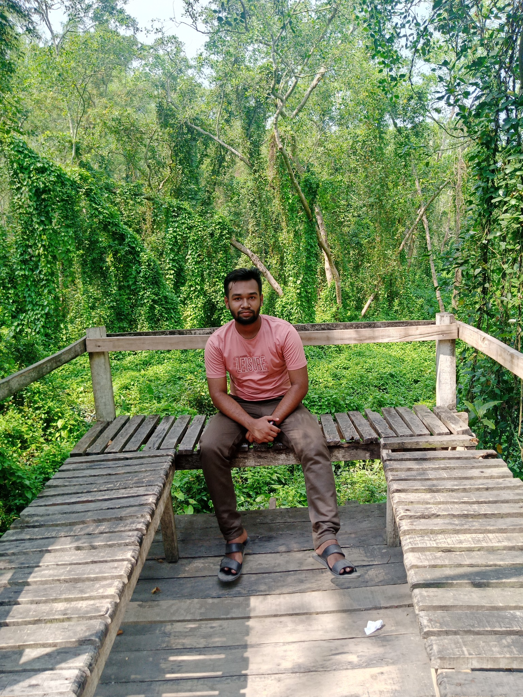

MD. Sabbir Hoshen Howlader
Translating complex technical concepts into measurable business value. Combining deep software engineering experience with formal accounting education.
Academic Background
| Level | Institution | GPA | Focus |
|---|---|---|---|
| PSC | Rajapur Model Pilot High School | 2.93 | General |
| JSC | SUBIDKHALI R.E. Pilot Secondary School | 3.57 | General |
| SSC | SUBIDKHALI R.E. Pilot Secondary School | 4.28 | Commerce |
| HSC | Subidkhali Government College | 4.17 | Commerce |
| BBA (Honours) | B.M. College (Current) | — | Accounting |
My Gallery

Career Progression
Initial exposure to software architecture through modding. Transitioned to self-directed learning of core languages including C#, HTML, and Python. Built a foundational understanding of logic and computation.
Began undertaking professional freelance projects. Expanded technology stack to include Android development (Java & XML) and OpenCV for computer vision mapping. Adopted professional documentation and research methodologies.
Primary operational phase executing freelance contracts. Delivered comprehensive applications using Python and Unity. Expanded capabilities into robust web backend architectures and large-scale data automation scripts for diverse clients.
Admitted to the BBA program in Accounting at BM College.
Recognizing that technical execution must serve business objectives, I am leveraging my analytical background to master finance, corporate operations, and strategic administration, bridging the gap between code and commerce.